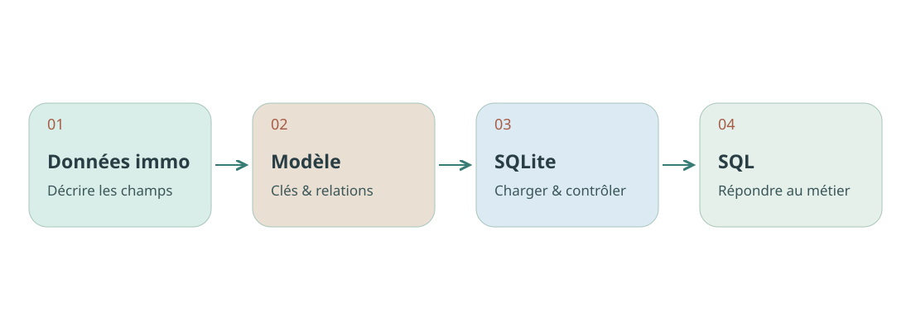

Schéma explicatif du périmètre décrit ; les environnements sont précisés dans l’étude.
Le besoin et ma contribution
Rendre les données de transactions cohérentes et interrogeables. J’ai conçu le schéma relationnel et le dictionnaire, défini les clés et produit les analyses SQL.
Structurer les entités
Le modèle organise six tables : bien, mutation, commune, département, région et type de local. Les clés et relations séparent référentiels et transactions afin d’éviter de recopier les mêmes informations dans chaque ligne.
Choisir la requête selon la question
Jointures et agrégations répondent aux analyses de volumes et de prix ; les CTE structurent les étapes, et ROW_NUMBER permet des classements par groupe. Le calcul d’un prix au m² suppose de préciser population, surface et regroupement.
Un socle SQL démontrable
Le support documente le schéma, les contrôles et les requêtes. L’objectif est la justesse du modèle et de l’analyse, pas un gain de performance annoncé sans benchmark.
Périmètre de l’analyse
Les conclusions dépendent du jeu fourni et de ses définitions. Les analyses ne constituent pas une prévision du marché immobilier.
Code et éléments de preuve
Les extraits et résultats ci-dessous proviennent des livrables du projet, consultés le 16 novembre 2026. Les traitements n’ont pas été réexécutés pour cette présentation.